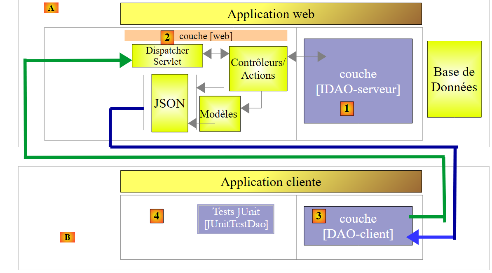
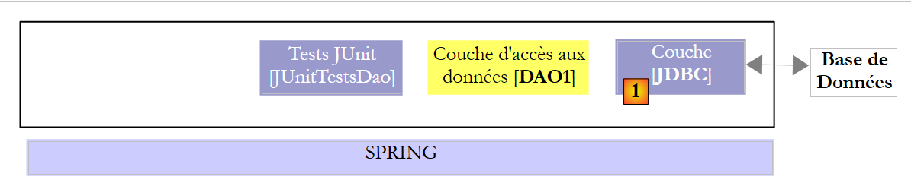

22. Fazit
Fassen wir noch einmal zusammen, was wir in diesem Dokument behandelt haben. Wir haben zwei Schichten [DAO] mit einer der beiden folgenden Architekturen untersucht:
 |
 |
Die Schicht [DAO1] wurde mit Spring JDBC implementiert und die Schicht [DAO2] mit Spring JPA. Die Schichten [DAO1] und [DAO2] implementierten dieselbe Schnittstelle [IDAO], wodurch es möglich war,einen einzigen Test [JUnitTestDao] zu schreiben, um die beiden Schichten [DAO] zu testen;
Nachdem dies erledigt war, haben wir die Schnittstelle [IDAO] wie folgt im Web bereitgestellt:
 |
- In [1] wurde die Schicht [IDAO] über eine von Spring MVC implementierte Webschicht [2] im Web verfügbar gemacht. Es handelt sich tatsächlich um die Schnittstelle [IDAO], die verfügbar gemacht wurde, und wir haben zwei Versionen des Webdienstes erstellt, je nachdem, ob diese Schnittstelle mit einer Architektur vom Typ [DAO-JDBC] oder [DAO-JPA-JDBC] implementiert ist;
- In [B] nutzt ein Remote-Client die vom Webdienst bereitgestellten URL, die Zugriff auf die Methoden der Schicht [IDAO-serveur] gewähren. Es wurde sichergestellt, dass die Schicht [DAO-Client] [3] die Schnittstelle [IDAO-serveur] [1] implementiert. Dadurch konnten wir denselben Test [JUnitTestDao] verwenden, der bereits zweimal zum Einsatz gekommen war;
- in [3] wurde die Schicht [DAO-client] mit Spring RestTemplate implementiert;
Anschließend haben wir den Zugriff auf den Webdienst gesichert:
 |
- In [5] durchläuft die Anfrage HTTP des Clients eine mit Spring Security implementierte Authentifizierungsschicht;
Damit haben wir die bisherige Architektur wie folgt weiterentwickelt:
 |
- In [3] ist die Client-Anwendung selbst eine Webanwendung, die vom Webserver [4] bereitgestellt wird. Die Client-Anwendung zeigt im Browser ein Formular [5] an, über das die URL des gesicherten Webdienstes abgefragt werden können. Der Zugriff auf den gesicherten Webdienst erfolgt über eine in JavaScript implementierte Schicht. Diese Architektur nutzt sogenannte domänenübergreifende Anfragen:
- Der Webdienst stellt URL in der Form [http://machine1:port1/] bereit;
- die Client-Webanwendung wird von einer URL-[http://machine2:port2/] heruntergeladen. Wenn [http://machine2:port2/] nicht mit [http://machine1:port1/] identisch ist (gleicher Rechner, gleicher Port), blockiert der Client-Browser die Aufrufe von HTTP aus der Schicht [DAO-client-js]. Um dieses Problem zu beheben, muss der Webdienst domänenübergreifende Anfragen zulassen;
Die vorgestellten Projekte wurden mit den folgenden sechs Datenbanken getestet:
- MySQL 5 Community Edition;
- SQL Server 2014 Express;
- PostgreSQL 9.4;
- Oracle Express 11g Release 2;
- IBM DB2 Express-C 10.5;
- Firebird 2.5.4;
Für jedes dieser SGBD wurden vier verschiedene Schichten [DAO] entwickelt:
- eine mit Spring implementierte Schicht JDBC;
- eine mit Spring JPA und dem Hibernate-Anbieter JPA implementierte Schicht;
- eine mit Spring JPA und dem Anbieter JPA EclipseLink implementierte Schicht;
- eine mit Spring implementierte Schicht JPA und die Provider JPA sowie OpenJPA;
Es wurde also eine Reihe von vierundzwanzig verschiedenen Konfigurationen vorgestellt. Es wurden große Anstrengungen zur Faktorisierung unternommen:
- Der Großteil des Codes wurde nur einmal geschrieben. Er basiert auf zwei Maven-Konfigurationsprojekten:
- Das eine konfiguriert die Schicht JDBC;
- das andere konfiguriert die Ebene JPA;
 |
 |
Das Maven-Konfigurationsprojekt für die Schicht JDBC [1] eines bestimmten SGBD ermöglicht:
- das Treiberarchiv JDBC zu importieren;
- die Zugangsdaten für die verwendete Datenbank sowie die verschiedenen Befehle SQL festzulegen, die die Schicht [DAO1] an den Treiber JDBC sendet. Obwohl SQL standardisiert ist, traten Portabilitätsprobleme auf, die hauptsächlich darauf zurückzuführen waren, dass in den Abfragen Tabellen- und Spaltennamen vorkamen, die sich in bestimmten SGBD als unzulässige Schlüsselwörter erwiesen (Tabelle ROLES für DB2, Spalte PASSWORD für Firebird). Obwohl Spaltennamen normalerweise nicht zwischen Groß- und Kleinschreibung unterscheiden, trat bei PostgreSQL ein Problem mit der Spalte ID des Primärschlüssels der Tabellen auf. Das Programm verlangte, dass sie „id“ in Kleinbuchstaben heißen sollte;
Die drei Maven-Konfigurationsprojekte der Schicht JPA, [2] und eines bestimmten SGBD ermöglichen:
- das Archiv der Implementierung „JPA“ zu importieren;
- die Konfiguration der Implementierung JPA, die für das jeweils verbundene SGBD verwendet wird. Tatsächlich ist es die Schicht JPA, die die Befehle SQL an die Schicht JDBC sendet. Um effizient zu arbeiten, muss sie den SGBD kennen, um ihm die Befehle SQL zu senden, die er erkennen wird. Diese Befehle können den SQL nutzen, der Eigentümer dieses SGBD ist, sowie dessen spezifische Eigenschaften (Datentypen, Sequenzen, Trigger, Prozeduren, automatische Generierung von Primärschlüsseln usw.);
So wurden vierundzwanzig Maven-Konfigurationsprojekte (4 Konfigurationen × 6 SGBD) erstellt, auf denen alle anderen Projekte zur Nutzung der Datenbank basierten. Da in den obigen Schemata die Schichten [DAO1] und [DAO2] dieselbe Schnittstelle bieten, wurden die 24 Konfigurationen der beiden oben genannten Architekturen mit der einzigen Testklasse [JUnitTestDao] getestet. Nachdem diese Architekturen überprüft worden waren, gab es keine Schwierigkeiten mehr:
- Das Maven-Projekt zur Veröffentlichung der Datenbank im Web basiert auf diesen beiden Architekturen. Auch hier gibt es also 24 mögliche Konfigurationen;
- das Maven-Projekt zur Absicherung des Zugriffs auf den Webdienst baut auf dem vorherigen Projekt auf und verfügt ebenfalls über 24 mögliche Konfigurationen;
- schließlich stützt sich das Maven-Projekt, das domänenübergreifende Anfragen an den gesicherten Webdienst ermöglicht, auf das vorherige Projekt und verfügt ebenfalls über 24 mögliche Konfigurationen;
Obwohl dieses Dokument nicht alle Möglichkeiten der Programmiersprache Java und auch nicht alle ihre Anwendungsbereiche abdeckt, kann es als Lernmaterial für die Sprache verwendet werden. Leser, die den Inhalt dieses Kurses verinnerlicht haben, erreichen sowohl im Umgang mit der Sprache als auch mit dem Spring-Framework das Niveau „Java für Fortgeschrittene“. Sie können ihre Java-Ausbildung dann mit den folgenden Werken fortsetzen:
- [Spring MVC et Thymeleaf par l'exemple] [http://tahe.developpez.com/java/springmvc-thymeleaf], das das Erlernen des Spring-Ökosystems fortsetzt und dessen Zweig „Webprogrammierung“ (MVC) vorstellt. Es verwendet eine komplexere Datenbank als die hier behandelte;
- [Tutoriel AngularJS / Spring MVC] [http://tahe.developpez.com/angularjs-spring4], das eine Client-Server-Webarchitektur aufweist, bei der der Client mit dem Framework [AngularJS] und der Server mit [Spring MVC] implementiert ist;
- [Introduction à Java EE] [http://tahe.developpez.com/java/javaee], das die Spring-Umgebung zugunsten einer Webarchitektur auf Basis von JSF (Java Server Faces) und EJB (Enterprise Java Bean) verlässt;
- [Introduction à la programmation des tablettes Android] [http://tahe.developpez.com/android/exemples-intellij-aa], das eine Client-Server-Architektur beschreibt, bei der der Client ein in Java programmiertes Android-Tablet und der Server ein mit Spring implementierter Webdienst ist (MVC);